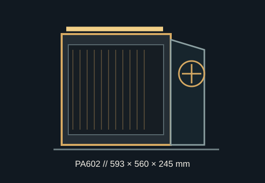

[ MODEL IDENTIFICATION // ASUS PROART PA602 ]
ASUS ProArt PA602
A high-airflow E-ATX tower measuring 593 × 560 × 245 mm, with 440 mm GPU clearance, 185 mm CPU-cooler height and top radiator support up to 420 mm.

REVISION NOTE: ASUS lists these as case-level dimensions and maximum clearances. The installed radiator, front fans, PSU cables and graphics-card connectors can reduce practical fit.
Dimensions & fit specifications
| External dimensions | 593 × 560 × 245 mm (manufacturer order); listed mass 15.8 kg. |
|---|---|
| Motherboards | Mini-DTX, DTX, Mini-ITX, microATX, ATX and E-ATX up to 12 × 10.9 in (about 305 × 277 mm). |
| GPU / CPU cooler / PSU | Maximum GPU length 440 mm; CPU cooler height 185 mm; PSU length 190 mm. |
| Radiators & fans | Top radiator up to 420 mm (also 360/280/240/140/120); rear radiator 140 or 120 mm. Front panel supports two 200 mm fans; ASUS specifies front fan cooling rather than a front radiator. |
| Drive bays | Four 2.5/3.5-inch combo bays plus four dedicated 2.5-inch bays; two additional vertical expansion positions supplement eight horizontal slots. |
| PSU/cable space | ATX power supply up to 190 mm long; cable-management space is 30 mm where listed. |
Compatibility & care notes
Plan the 420 mm top radiator with its fans and motherboard EPS/RAM clearance; a radiator's nominal length does not include every end tank or tube bend. At the front, the large factory fan configuration is an airflow arrangement, not proof of front radiator fit. Verify E-ATX board width and GPU power-cable bend against the actual unit before purchase.
- Keep the front, top and bottom filters clean and preserve the front-fan assemblies, GPU bracket and drive trays.
- Confirm the 190 mm PSU envelope includes room for modular plugs and cable turns in the lower compartment.
- Use the exact board manual for standoff locations; do not fit extra standoffs under an E-ATX board.
Manufacturer sources
- ASUS — ProArt PA602 product pageManufacturer overview of the high-airflow enclosure and 420 mm top cooling support.
- ASUS — ProArt PA602 technical specificationsManufacturer board, drive, radiator, GPU, cooler, PSU and dimension data.
For build planning, consult the regional PA602 manual and measure any used chassis for missing parts or modifications.